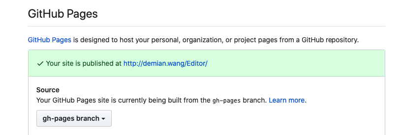

背景
笔者经常会用 create-react-app 做些 demo 项目。其中某些打算维护的项目，笔者会将其放到 github 上。但是此时的问题往往是，README 不能够很好的阐述项目的全貌，此时就需要将项目部署到线上，达到在线预览的效果。而 Github Pages 服务就可以很好的满足这个效果。
步骤介绍
一、项目初始化
创建项目:
1 | npx create-react-app demo |
然后在 package.json 中配置
1 | { |
配置 homepage 是为了后续打包时生成的路径为相对路径。
配置 deploy 是为了打完包后将所有静态文件部署到 github 的 gh-pages 分支上。
Github Pages 默认只支持 master、gh-pages 两个分支和 master/docs 目录。
二、构建本地项目
本文中默认用的构建脚手架是 create-react-app，生成的 package.json 中自带了构建命令：
1 | npm run build |
执行后，项目中会生成 build 目录
三、安装 gh-pages 依赖
gh-pages: 默认会发布文件到 github 的 gh-pages 分支
安装依赖：
1 | npm install gh-pages --save-dev |
四、部署
运行命令
1 | npm run deploy |
完成后，github 上会生成 gh-pages 分支，该分支下包含 build 目录中所有文件
此时打开 github，进入到具体项目中，具体如图所示
然后，点击 settings，在 Github Pages 标题下，将 source 分支设置为 gh-pages。
如图所示

然后访问 {username}.github.io/{项目名}，就可以在线预览项目了。